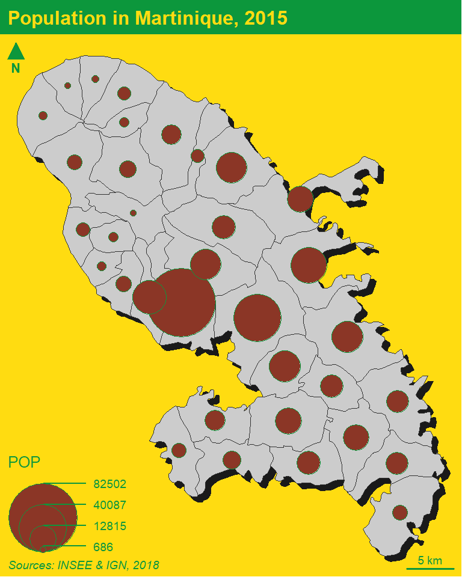
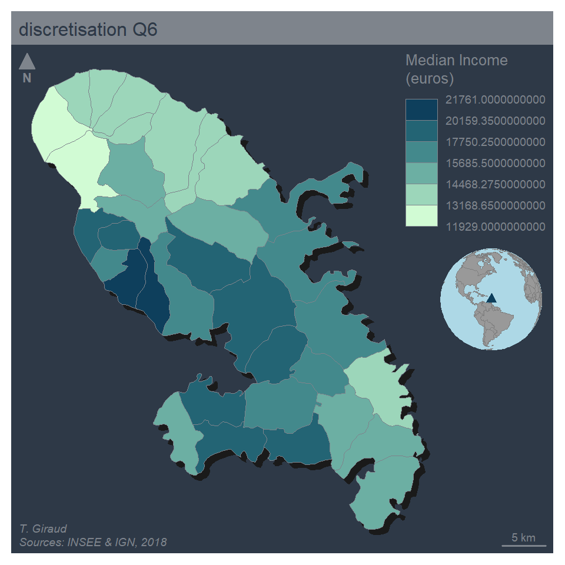

22/06/2021
library(mapsf)
mtq <- mf_get_mtq()
# Start a map using a theme and extra margins
mf_init(x = mtq, theme = "jsk")
# Plot a shadow
mf_shadow(mtq, col = "grey10", add = TRUE)
mf_map(mtq, add = TRUE)
# Plot a prop symb map
mf_map(x = mtq, var = "POP", type = "prop", symbol = "square")
# Plot a layout elements
mf_title("Population in Martinique, 2015")
mf_credits("Sources: INSEE & IGN, 2018")
mf_scale(size = 5)
mf_arrow('topleft')
## Warning: package 'sf' was built under R version 4.0.4

# Start a map using a theme and extra margins
mf_init(x = mtq, theme = "dark",
expandBB = c(0,0,0,.3))
# Plot a shadow
mf_shadow(mtq, col = "grey10", add = TRUE)
# Plot a choropleth map
mf_map(x = mtq, var = "MED", type = "choro",
pal = "Dark Mint",
breaks = "q6",
nbreaks = 6,
leg_title = "Median Income\n(euros)",
leg_val_rnd = 1,
add = TRUE)
# Add an inset world map
mf_inset_on(x = "worldmap", pos = "right")
mf_worldmap(mtq, col = "#0E3F5C")
mf_inset_off()
# Plot a layout elements
mf_title("discretisation Q6")
mf_credits("T. Giraud\nSources: INSEE & IGN, 2018")
mf_scale(size = 5)
mf_arrow('topleft')
